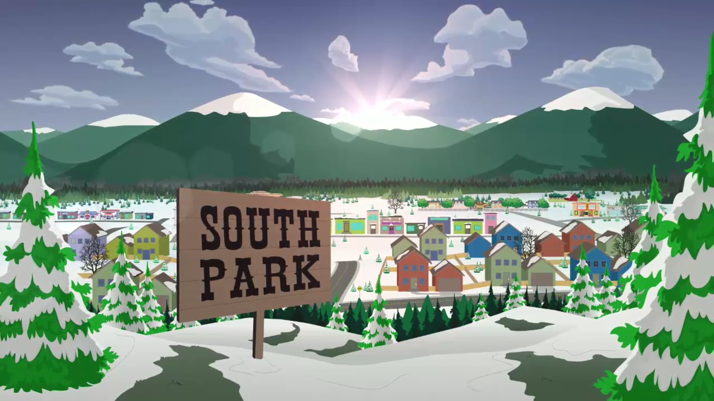

South Park is a small, stereotypical mountain town with an approximate population of 4,388, as revealed in "Chef Goes Nanners". Due to the show's use of a floating timeline, the town is perpetually in winter, with the occasional exception, such as "Summer Sucks", where the school year ended and summer vacation began. However, this "summer" only lasted for one episode, and the seasons of spring and fall were both bypassed completely.
